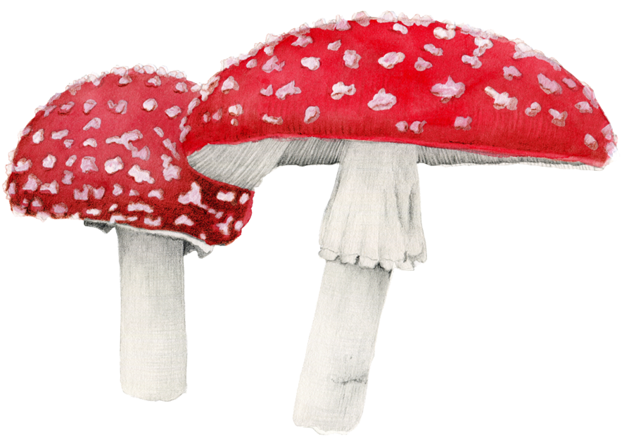
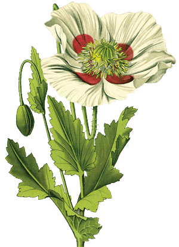
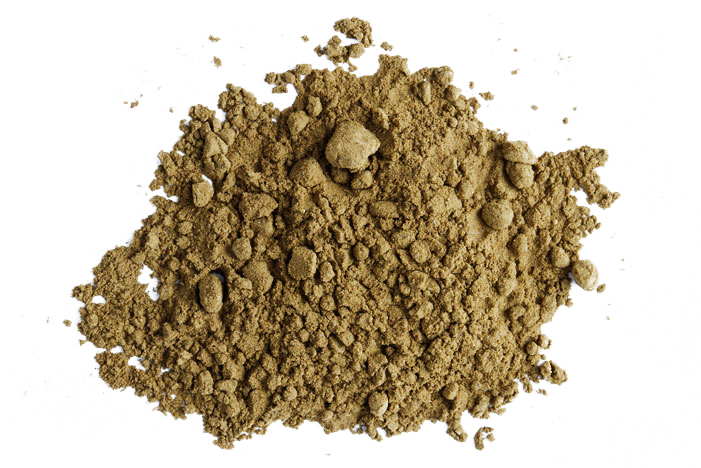
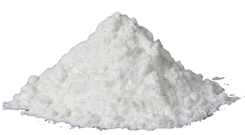
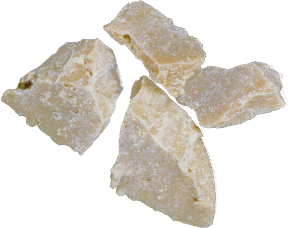
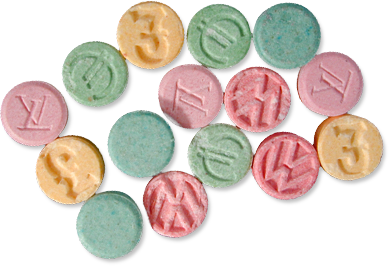
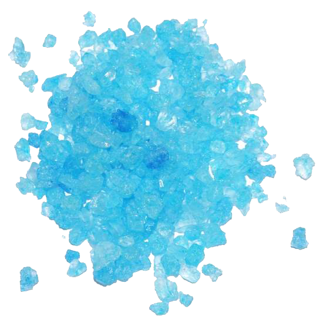

O termo maconha refere-se a várias drogas psicoativas e medicamentos derivados de plantas do gênero Cannabis. Farmacologicamente, o principal constituinte psicoativo desse tipo de planta é o tetrahidrocanabinol (THC) que varia de quantidade, dependendo da forma como a maconha é produzida ou fumada. É uma das drogas mais usadas no Brasil, por ser barata e de fácil acesso nos grandes centros urbanos.
Consumo
Cannabis pode ser fumada (em cachimbos ou enrolada em papel) ou ingerida.
Efeitos
Relaxamento; Leve euforia; Tempo de reação mais lento; Percepção sensorial distorcida; Equilíbrio e coordenação prejudicados; Vermelhidão ocular, Aumento da frequência cardíaca e do apetite; Secura da boca.
Haxixe
Haxixe é o extrato resinoso extraído do tricoma, das flores e das inflorescências da Cannabis, possuindo assim o mesmo constituindo psicoativo da maconha, o tetrahidrocanabinol (THC) . O haxixe encontra-se difundido principalmente no oriente e norte da África, onde o consumo por parte dos árabes remonta a tempos antigos.
Consumo
O haxixe pode ser fumado ou ingerido.
Efeitos
Relaxamento; Leve euforia; Tempo de reação mais lento; Percepção sensorial distorcida; Equilíbrio e coordenação prejudicados; Vermelhidão ocular, Aumento da frequência cardíaca e do apetite; Secura da boca.
Cogumelos Alucinógenos
Cogumelos alucinógenos, como o Amanita muscaria são fungos com propriedades alucinógenas, utilizados por diversos povos em atividades culturais e como drogas recreativas. O "Chá de cogumelos" é muito relacionado ao movimento hippie dos anos 60, que devido à psilocibina proporicionava efeitos alucinógenos que "abriam as portas da percepção". Porém, quando ingerido em sua forma natural, os efeitos se mostram mais intensos, já que a alta temperatura usada no "chá" destrói parte de seu potencial. Os mais antigos textos sobre o seu uso são da cultura asteca.
Consumo
Cogumelos são injeridos, muitas vezes na forma de chás.
Efeitos
Estados alterados de percepção e de sentimento; Alucinações visuais e sonoras; Náuseas; Nervosismo; Paranóia; Pânico.

Ópio
Ópio é um suco espesso, extraído por incisão feita na cápsula de papoulas soníferas (gênero Papaver) depois da floração, e que é utilizada como narcótico. O ópio tem um cheiro típico, que é desagradável. Seu sabor é amargo e um pouco acre, sendo castanha a sua cor. Os principais alcalóides do ópio são: a morfina, a codeína, a tebaína, a papaverina, a narcotina e a narceína. A medicina o utiliza, assim como os alcaloides que ele contém, como sonífero analgésico. O suco da papoula possui um poder hipnótico, euforizante e altamente viciante, conhecido há mais de seis mil anos pelos sumérios.
Consumo
O ópio é fumado em cachimbos ou ingerido (mascado).
Efeitos
Euforia (imedita); Coordenação prejudicada; Tontura; Confusão; Sedação; Sonolência; Analgesia; Náusea; Hipotensão; Tranquilidade; Sensação de peso no corpo; Respiração retardada; Miose.

Drogas Semi-sintéticas
Morfina
A morfina é um fármaco narcótico de alto poder analgésico usado para aliviar dores severas. Droga Semi-sintética pertencente ao grupo dos opioides, o nome da substância tem origem no deus grego dos sonhos, Morfeu. Com a invenção da agulha hipodérmica em 1857, o uso da morfina generalizou-se para o tratamento da dor crônica, da dor aguda e como anestésico. Foi utilizada na Guerra Civil Americana, resultando em 400 mil soldados com síndrome de dependência devido ao seu uso impróprio. A heroína foi derivada da morfina em 1874.
Consumo
A morfina pode ser ingerida e injetada no meio intravenoso e intramuscular.
Heroína, ou diacetilmorfina , é uma droga opióide semissintética obtida a partir de plantas da espécie Papaver somniferum, da qual é extraído o ópio. Durante o processamento do ópio origina-se a morfina que então é transformada em heroína. Trata-se de um entorpecente, que provoca diminuição da atividade do SNC, ou seja, é uma substância depressora. Produz sensações de prazer intenso, muitas vezes comparados com um orgasmo. Após essa fase de euforia ocorre um período de sedação. A droga causa dependência de forma rápida e o indivíduo busca maiores doses para obter o mesmo efeito.
Consumo
A heroína geralmente é injetada ou aspirada pelo nariz, mas pode também ser fumada.
Efeitos
Euforia (imediata); Coordenação prejudicada; Tontura; Confusão; Sedação; Sonolência; Analgesia; Náusea; Hipotensão; Tranquilidade; Sensação de peso no corpo; Respiração retardada; Miose.

Cocaína
Cocaína, ou benzoilmetilecgonina é um alcaloide usado como droga, derivada da Erythroxylum coca , com efeitos anestésicos e cujo uso contínuo causa dependência, hipertensão arterial e distúrbios psiquiátricos. A produção da droga é realizada através de extração da folha da coca, utilizando como solventes álcalis, ácido sulfúrico e querosene. Fisicamente, estimula os receptores-chave do cérebro que, por sua vez, cria uma euforia à qual os usuários rapidamente desenvolvem tolerância. Apenas o uso de doses mais elevadas e mais frequentes podem causar o mesmo efeito.
Consumo
É mais frequentemente cheirada, sendo o pó absorvido pela circulação sanguínea através dos tecidos nasais. Ela também pode ser ingerida ou esfregada nas gengivas. Existem usuários que a injetam para que a droga seja absorvida mais rapidamente pelo corpo, mas isto aumenta substancialmente o risco de overdose.
Efeitos
Aumento da freqüência cardíaca, da pressão arterial, da temperatura corporal, do metabolismo; Sentimentos de alegria; Euforia; Aumento da energia, do alerta mental; Tremores; Irritabilidade; ansiedade; Pânico; Paranóia; Comportamento violento; Psicose;.

Crack
Crack, também chamado de pedra ou rocha, é cocaína solidificada em cristais. O nome inglês crack deriva do seu barulho peculiar ao ser fumado. É a forma de cocaína mais viciante e também a mais viciante de todas as drogas. As pedras de crack oferecem uma curta, mas intensa euforia aos fumantes. Pode-se desenvolver uma tolerância considerável ao uso do crack, é quando os viciados procuram atingir o mesmo prazer de sua primeira experiência. Alguns usuários aumentam a frequência das doses para intensificar e prolongar os efeitos eufóricos.
Consumo
Para o consumo inalatório da droga, são utilizados cachimbos elaborados pelos próprios usuários, geralmente de alumínio e compartilhados entre o grupo de uso. Também tem sido comum o consumo de cigarros comuns ou de maconha com fragmentos de pedras de crack. A forma injetável de cocaína não teve sucesso e foi quase extinta no Brasil, substituído pelo crack que provoca efeito semelhante.
Efeitos
Aumento da freqüência cardíaca, da pressão arterial; Sentimentos de alegria; Euforia; Aumento da energia, do alerta mental; Tremores; Irritabilidade; ansiedade; Pânico; Paranóia; Comportamento violento; Psicose; Tremores; Perda de apetite; Alterações na percepção.

Drogas Sintéticas
LSD
O LSD é uma das mais potentes substâncias alucinógenas conhecidas. É obtido a partir da dietilamida do ácido lisérgico, que se encontra num fungo que se desenvolve no centeio e em outros grãos. O LSD atingiu o apogeu de sua popularidade na década de 1960, estando seu consumo constantemente associado ao movimento psicodélico. O seu efeito pode durar até 12 horas.
Consumo
É produzido na forma de cristal, mas transformado em uma folha fina de papel decorado para o consumo. É ingerida ou absorvida pela língua.
Efeitos
Estados alterados de percepção e de sentimento; Alucinações visuais e sonoras; Náuseas; Aumento da temperatura corporal, da freqüência cardíaca, e da pressão arterial; Sudorese; insônia; Comportamento impulsivo.
Ecstasy
O Ecstasy, também conhecida como bala, é uma droga sintética, fabricada em laboratório. O princípio ativo do Ecstasy é uma substância chamada metilenodioximetanfetamina, que pode ser abreviado de MDMA, que é um tipo de anfetamina (estimulante), também tem efeitos parecidos com os alucinógenos. Age na fisiologia humana diminuindo da reabsorção da serotonina, dopamina e noradrenalina no cérebro, onde estas substâncias ficarão em maior contato entre as sinapses. É extremamente utilizada em festivais e clubes noturnos, por seus efeitos euforizantes e desinibidores.
Consumo
O ecstasy pode ser injerido, injetado ou aspirado pelo nariz.
Efeitos
Efeitos alucinogénicos leves; Sensibilidade tátil aumentada; Sentimentos empáticos; Inibição reduzida; Ansiedade; Arrepios; Sudorese e perda de líquidos; Bruxismo.

Metanfetamina
A metanfetamina, ou N-methylamphetamine , é uma droga uma droga branca cristalina muito potente e altamente viciante, cujos efeitos se manifestam no sistema nervoso central e periférico. A MA exerce seus efeitos ao aumentar agudamente as quantidades de dopamina, noradrenalina e serotonina na fenda sináptica, ampliando assim a neurotransmissão monoaminérgica. Os efeitos desta droga geralmente duram cerca de 6 a 8 horas. Pessoas fortes que conseguem controlar o uso de outras drogas se viram fora de controle com cristal.
Consumo
Na forma de cristal, pode ser fumada. Metanfetamina na forma de pó é geralmente cheirada, mas pode ser misturada em água e injetada por via intravenosa. Pode ainda ser misturada numa garrafa com água e ser bebida.
Efeitos
Aumento da freqüência cardíaca, da pressão arterial, da temperatura corporal, do metabolismo; Sentimentos de alegria; Euforia; Aumento da energia, do alerta mental; Perda de apetite; Irritabilidade; Ansiedade; Pânico; Paranóia; Comportamento violento; Psicose.

Anfetamina
Anfetaminas são substâncias que têm a estrutura química básica da beta-fenetilamina. A anfetamina é uma droga estimulante do sistema nervoso central, que provoca o aumento das capacidades físicas e psíquicas. É utilizada na medicina no tratamento do transtorno de déficit de atenção e hiperatividade (ADHD), narcolepsia e obesidade, mas também usada como narcótico. Possui propriedades extremamente viciantes, sendo totalmente proibida em alguns países da Europa. É muito utilizada no Brasil por caminhoneiros que querem permanecer acordados durante seus turnos.
Consumo
A Anfetamina pode ser fumada, anfetamina na forma de pó é geralmente cheirada, mas pode ser misturada em água e injetada por via intravenosa ou até ingerida.
Efeitos
Aumento da freqüência cardíaca, da pressão arterial, da temperatura corporal, do metabolismo; Sentimentos de alegria; Euforia; Aumento da energia, do alerta mental; Perda de apetite; Irritabilidade; Ansiedade; Pânico; Paranóia; Comportamento violento; Psicose.